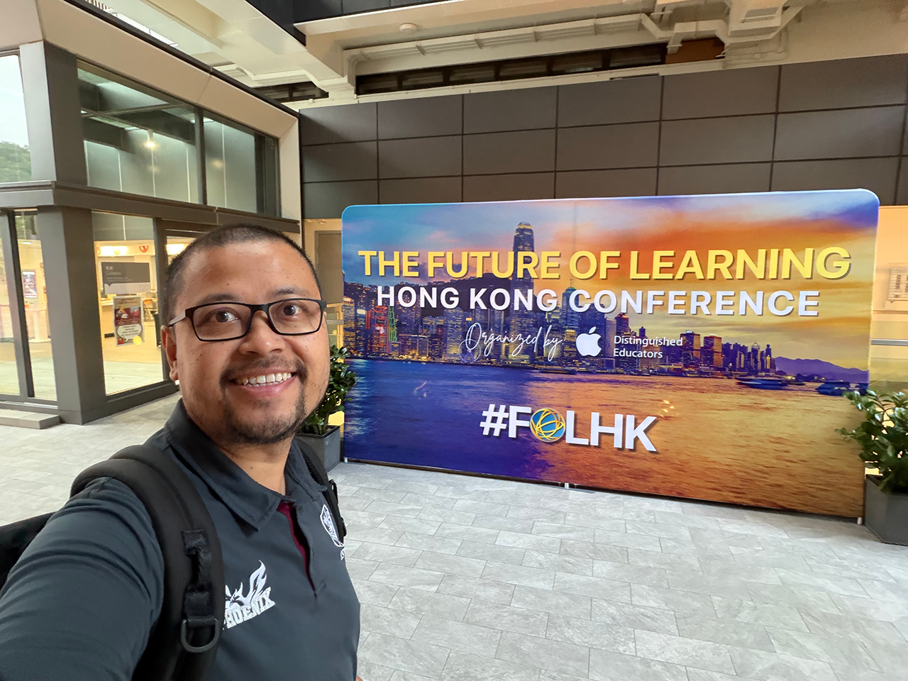
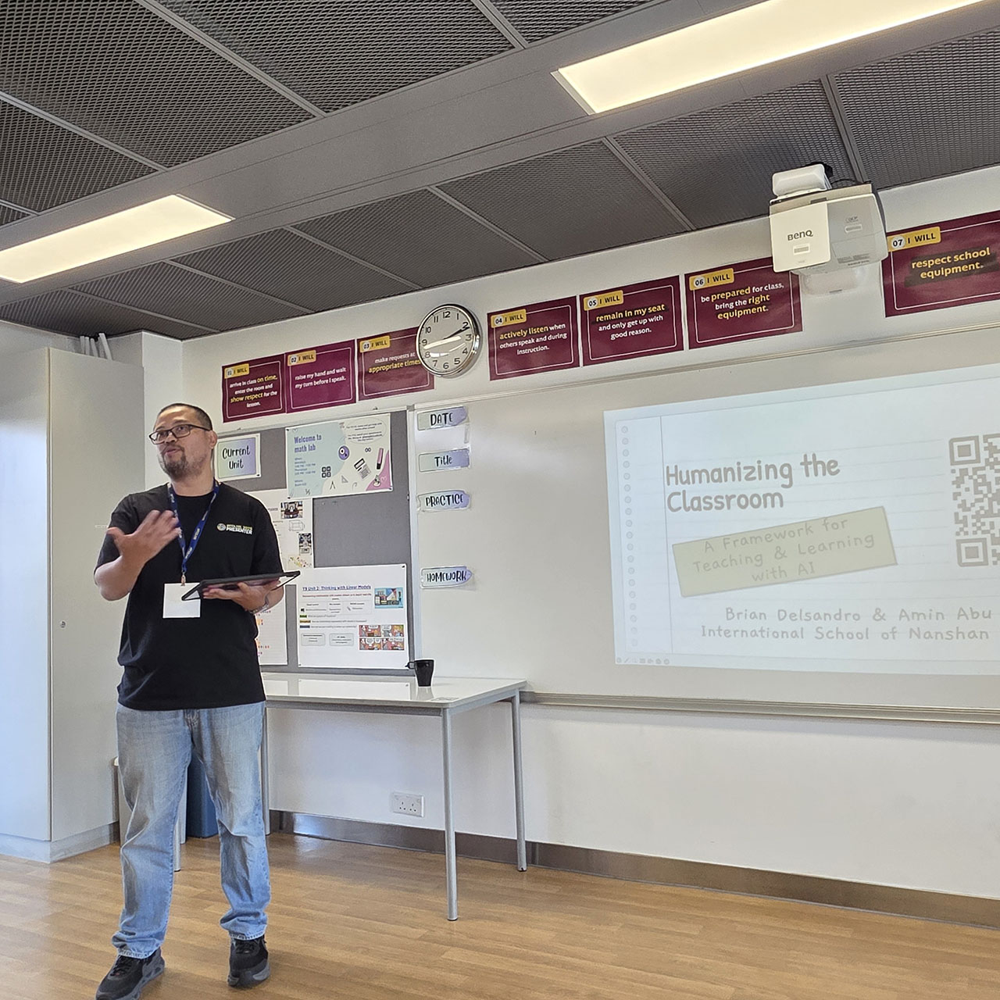
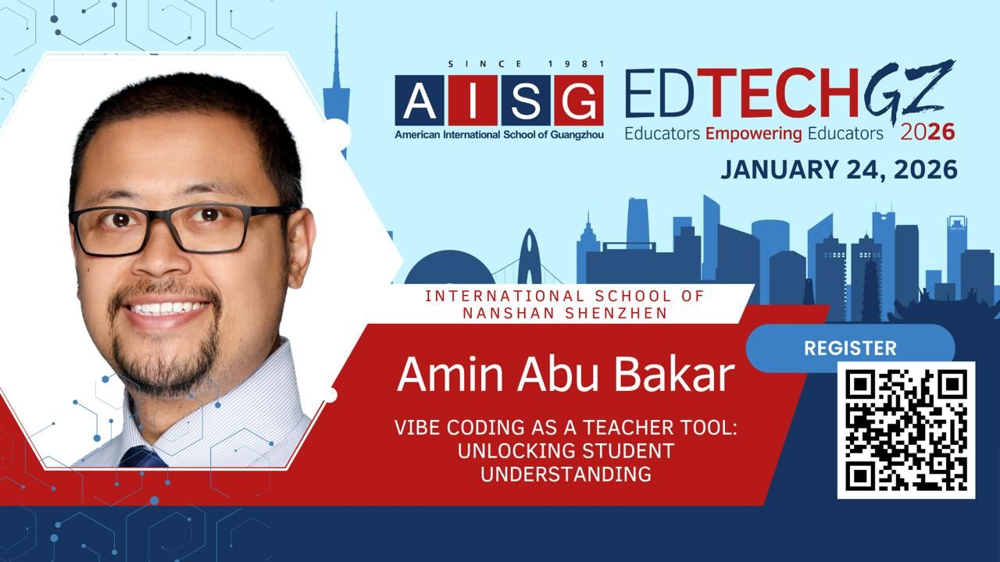
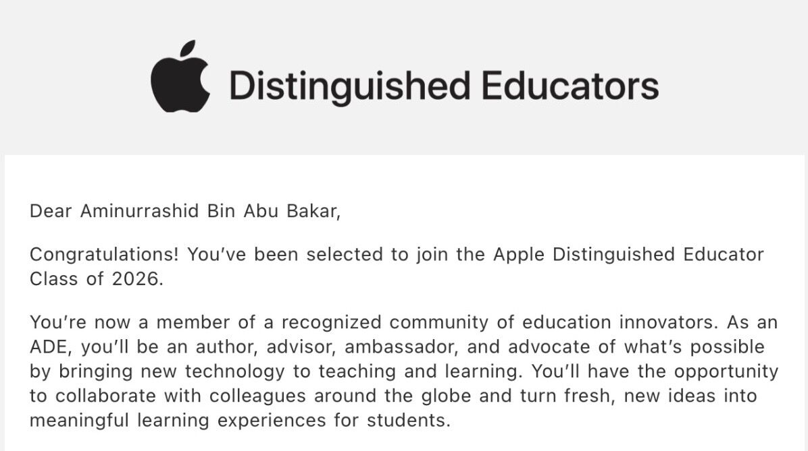

2.1 Learner — 2.1.B Participate in PLNs
Pursue professional interests by creating and actively participating in local and global learning networks.

Attending Future of Learning Hong Kong gave me the opportunity to explore how AI can support more personalized, student-centered learning. Conversations with educators from diverse school contexts challenged my assumptions and helped me refine how I want to approach AI in my own teaching practice. I'm leaving with practical ideas I'm excited to test and reflect on with my students.
2.2 Leader — 2.2.C Model Digital Tool Use
Model for colleagues the identification, exploration, evaluation, curation and adoption of new digital resources and tools for learning.

At FOLHK 2025, I had the opportunity to co-present with Brian Delsandro on Humanizing the Classroom: A Framework for Teaching and Learning with AI. Our session focused on how educators can use AI thoughtfully — not as a replacement for good teaching, but as a tool to strengthen student agency, feedback, and meaningful learning experiences.
2.2 Leader — 2.2.B Advocate for Equitable Access
Educators advocate for equitable access to technology, high-quality digital content, and learning opportunities to meet the diverse needs of all students.

Grateful to have presented at EdTechGZ 2026 on vibe coding as a teacher tool. Vibe coding has helped me make digital learning more accessible for a wider range of students by allowing them to interact with concepts visually, at their own pace, and with multiple entry points. It has been a practical way to support diverse learners while keeping learning meaningful and student-centered.
2.6 Facilitator — 2.6.A Foster Student Ownership of Learning
Foster a culture where students take ownership of their learning goals and outcomes in both independent and group settings.

Being selected as an Apple Distinguished Educator (ADE) provides strong evidence of my commitment to fostering student agency. In my teaching practice, I intentionally design learning environments where students reflect on their progress, make purposeful choices, and take responsibility for the quality of their work in both independent and collaborative settings. The ADE programme recognizes educators who create learning experiences that empower students to take ownership of their goals, decision-making, and outcomes.